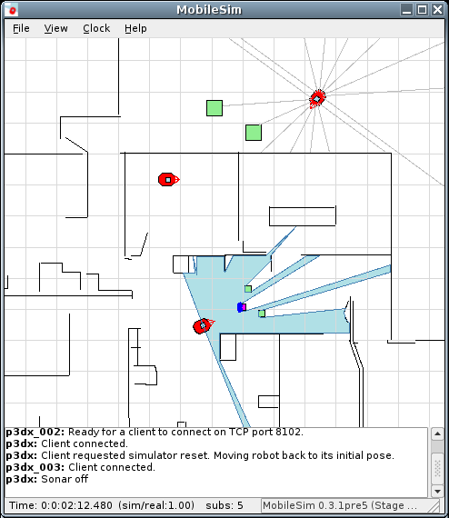

With Omron/Adept MobileRobots
Until 2018, MobileRobots was a business unit of Omron Automation (previously owned by Adept Technology) specializing in providing hardware and software platforms
used for education and advanced research in mobile robotics. An archive of the website featuring photos and information on the products
is availabe via The Internet Archive.
Customizable systems were sold to research universities, institutes, government agencies and private enterprises around the world, and provided
with comprehensive software libraries and highly regarded personalized customer support.
ARIA
ARIA
After the closure of MobileRobots, I made various improvements to the ARIA open source (GPL) code as a new partially-compatible library (AriaCoda) such as modernizing parts of the C++ codebase to C++17, optimizing a key LIDAR data processing component, removing obscolete code, overall optimization (reducing memory allocation and copying), generally improved C++ code robustness, fixed a few bugs, added additional ROSARIA features, and assisted remaining AriaCoda and ROSARIA users.
MobileSim

After 2020, I made various improvements to the MobileSim open source (GPL) code as AMRISim) such as adding infrastructure to support multiple interfaces and adding a new ROS interface in addition to the previous Pioneer/ARIA interface, modernizing and optimizing parts of the C++ code fixing bugs and assisting AMRISim users.
User Documentation
Led initiatives to improve, expand and polish customer documentation and manuals.
- Ensured that library APIs used by customers were comprehensively and accuracetly documented with consistent, clear API documentation, example programs, tutorials and knowlege base articles.
- Updated and modernized several existing product user manuals. Added information and diagrams requested by users based on customer support data.
- Co-Authored manuals for two new products including introductory explanations, all reference information, diagrams, schematics and step-by-step instructions, and safety information.
- Helped create manual for a new product variant by adapting existing manual, making accurate changes and adapting scope of information included to fit target market.
- Led the creation of a library of modular short guides for each optional accessory available for products, with key information, quick start guide and links to additional documentation.
- Helped create and later led the maintainaince of a comprehensive online knowlege base of information and infrastructure for distributing above documentation along with software releases and updates.
- Worked with customer support lead to moderate and administer user discussion lists (specific related to development software).
- Covered for customer support lead on hardware customer problems when neccesary, expanded knowlege of hardware aspects of products.
- Customer documentation was created using Doxygen (API docs), MS Word, Madcap Flare, and ReStructured Text (product manuals and accessory guides), and customized MediaWiki installation (knowlege base and document/software distribution support site.)
-
Excerpts of the above work are available privately upon request.
A partial archive of the public Omron/Adept MobileRobots support knowlege base and downloads website is available at
The Internet Archive
Other
As Independent Software Developer
Map Viewer
In Development

Map and nautical chart viewer with GPS tracking, implemented in C++ and QML/Javascript using Qt 6.x. Intended to be simple and easy to use
while hiking, sailing, boating, etc.
Tools used include C++20, CMake, Conan, libfmt, libproj, catch2, Qt6, QtCreator, git, Android Studio, Android NDK
Implemented:
- Load and display maps and charts in GeoTIFF or BSB (KAP) file formats.
- Read GPS data and automatically move map image to track position (current location is shown near bottom of view; map moves relative to screen and this position as you move).
- Temporary zoom in/out or set.
- Use GPS positions to calculate course over ground (direction of travel). Automatically rotate map view to orient to coures, show course line and bearing.
- Automatically determine magnetic compass declination (magnetic variance).
- Select destination waypoint from list with one click. Highlight destination waypoint on map, display bearing line to destination, angle
and distance.
- Load waypoints from GPX file.
- Convert and display headings and bearings in degrees relative to both true and magnetic north.
- Display data from GPS and calculated by app in resizable grid view.
- Partial test coverage of some data and navigation calculations, geographic projection, data logging and other utility classes.
- Runs on Android and Linux.
- Optionally record all data received and calculated to a CSV data log file.
In Progress:
- Additional test coverage.
- Windows Desktop version.
- Additional data calculations such as VMG, True Wind, etc.
- Use computed true wind direction to compute laylines to waypoint and visualize on map view.
- Read GPS data from network (wifi/ethernet) and Bluetooth interfaces.
- Support additional map file formats (GeoPDF, GeoPNG, GeoJPEG, KML/KMZ with overlay, etc.)
- Record past track as you move. Save to GPX file. Include positions and any other data selected.
- Improve UI elements: choosing map file(s), viewing/editing waypoints, choosing preferences etc.
- Visualization of GPS position accuracy.
Future Ideas:
- Tools to follow route (a sequence of waypoints)
- iOS and MacOS versions.
- "Bare" embedded version for OEM devices. (QNX, VxWorks and other platforms are also possible.)
- Split screen and other additional features on larger size devices (Desktop, tablets.)
- Sync data between devices (e.g. Desktop to mobile.)
- Visualization of wind, tide and current, manual approach/guide lines related to specific points.
- Display AIS data if available via NMEA
- Other features useful for sail boat/yacht racing and cruising.
- Support for vector map data.
- Simplified visualization of elevation, slope and other terrain information
- Data collection tools such as photos, interconnection with other apps, field notes, etc.
- ... plus many more ideas.